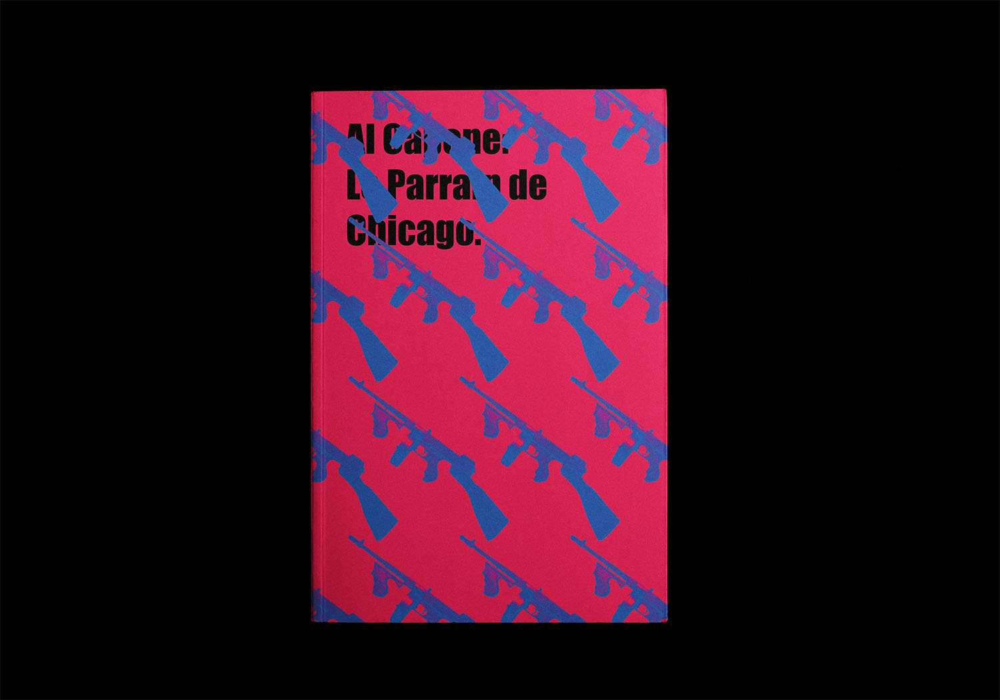
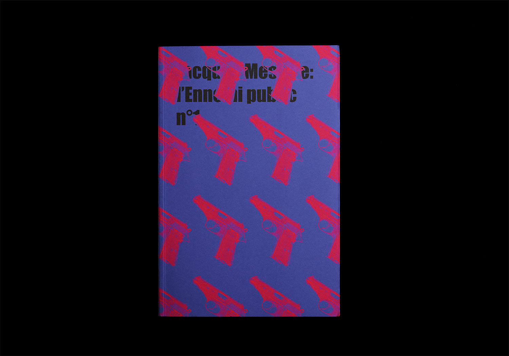

Gangsters
Creation of a first and fourth cover for a collection of fictional books on the theme of Gangsters. Each book retraces the journey of a mythical gangster by analyzing from his childhood, to the consequences of his actions.
The objective of this project is to communicate the scary side of the gangster without going into sensationalism.



Project "Gangsters" - 2026